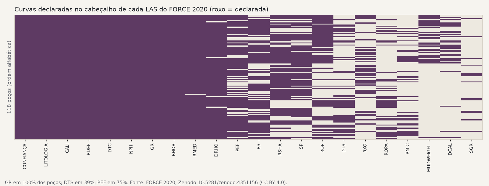
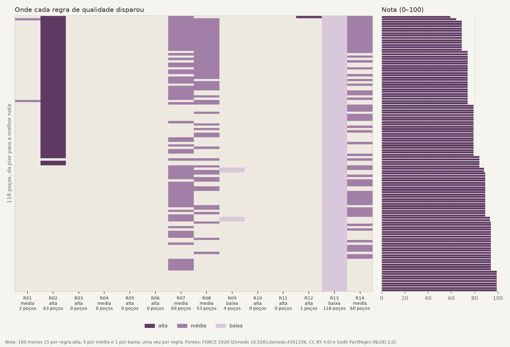
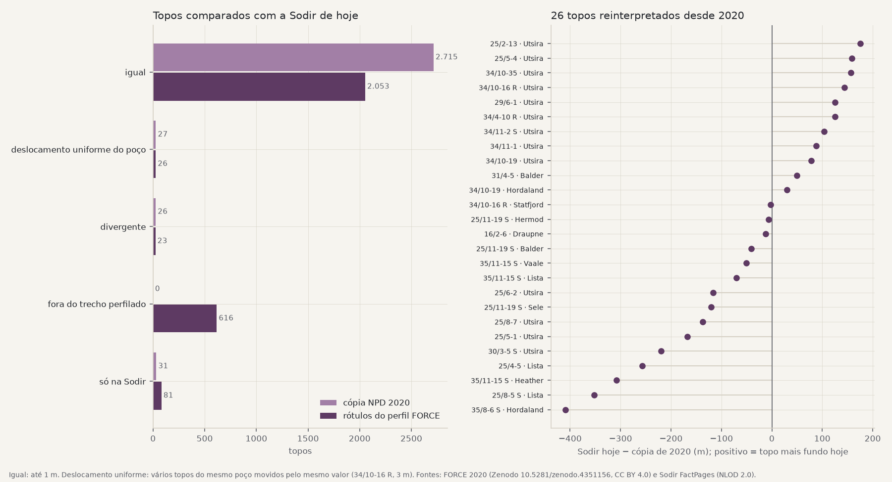
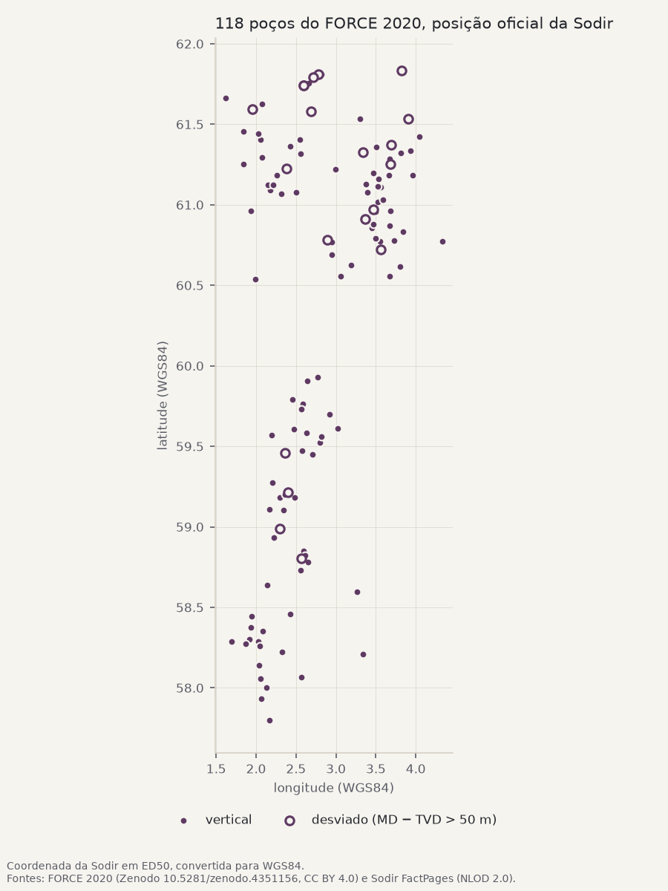
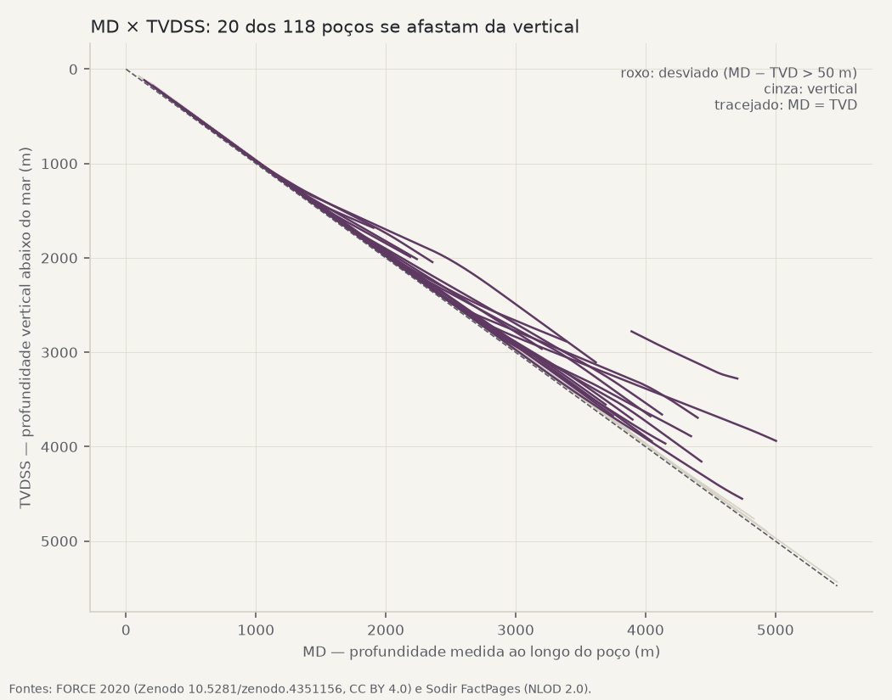

Base de poços: relatório de qualidade
118 poços do Mar do Norte norueguês, duas fontes públicas que não concordam, um banco só.
data/raw/manifesto.csv, e cada linha do banco aponta para o arquivo de onde veio.Antes e depois
O que mudou entre juntar as fontes direto e passar pela base. O dado medido não foi alterado; o que muda é o que fica ligado, comparável e marcado.
| O quê | Antes | Depois | Como |
|---|---|---|---|
| Poços ligados ao cadastro oficial (Sodir) | 116 de 118 pelo nome | 118 de 118 | dois desvios técnicos mapeados por posição e mesa rotativa (D01, D02) |
| Topos de 2020 casados com os topos oficiais de hoje | 4 pelo nome exato | 2.768 | nome-base, grafia norueguesa, duas renomeações (D03) |
| Amostras com profundidade medida (MD) | 2.221.893 | 2.337.639 | índice do LAS no lugar da coluna de trajetória (D06) |
| Códigos de ausência de dado | 2 (−999,25 e −999) | 1 (NULL) | 29.535 valores trocados em 34/11-2 S (D10) |
| Topos oficiais com profundidade vertical (TVDSS) | 0 (a Sodir publica só MD) | 2.668 | interpolação na trajetória do perfil |
| Problemas registrados com regra, poço e intervalo | 0 | 951 | 15 regras em config/regras.yaml; marcam, não corrigem |
Sobre os topos: tirar o ponto final e passar para maiúsculas já casa 2.277; o resto depende de grafia norueguesa (Ø, Å), sufixos e unidades renomeadas.
Completude das curvas básicas
Medida, não alterada: a base não preenche curva que falta.
| Curva | Amostras com dado | Poços com a curva em mais da metade do perfil |
|---|---|---|
| GR | 98% | 118 de 118 |
| RHOB | 60% | 81 de 118 |
| NPHI | 44% | 52 de 118 |
| DTC | 77% | 102 de 118 |
| RDEP | 95% | 116 de 118 |

Problemas por regra
As regras estão em config/regras.yaml, com gravidade e parâmetros. Cada uma tem teste nos dois sentidos (pega o caso ruim, deixa passar o bom). A nota do poço desconta 15 por regra alta, 5 por média e 1 por baixa.
| Regra | O que verifica | Gravidade | Ocorrências | Poços |
|---|---|---|---|---|
| R01 | curva declarada sem dado | média | 2 | 2 |
| R02 | valor fisicamente impossível | alta | 103 | 63 |
| R03 | profundidade fora de ordem ou repetida | alta | 0 | 0 |
| R04 | trecho sem perfil | média | 0 | 0 |
| R05 | geometria impossível (MD − TVD diminui) | alta | 0 | 0 |
| R06 | intervalos de litologia sobrepostos | alta | 0 | 0 |
| R07 | curvas básicas incompletas | média | 121 | 69 |
| R08 | densidade em poço arrombado | média | 53 | 53 |
| R09 | interpretação de baixa confiança | baixa | 4 | 4 |
| R10 | poço duplicado | alta | 0 | 0 |
| R11 | topos oficiais fora de ordem | alta | 0 | 0 |
| R12 | código de nulo diferente do declarado | alta | 2 | 1 |
| R13 | curva sem unidade no cabeçalho | baixa | 539 | 118 |
| R14 | PEF com efeito de baritina | média | 59 | 59 |
| R15 | amostra sem trajetória | média | 68 | 68 |

Os dez poços com pior nota
| Poço | Nota | Regras | Achados de cadastro |
|---|---|---|---|
| 34/11-2 S | 54 | R02 R07 R12 R13 R14 R15 | perfil 15 m abaixo da profundidade final oficial |
| 35/8-4 | 59 | R01 R02 R07 R08 R13 R14 R15 | |
| 16/10-2 | 64 | R02 R07 R08 R13 R14 R15 | perfil 8 m abaixo da profundidade final oficial |
| 25/2-14 | 64 | R02 R07 R08 R13 R14 R15 | perfil 6 m abaixo da profundidade final oficial |
| 25/3-1 | 64 | R02 R07 R08 R13 R14 R15 | perfil 8 m abaixo da profundidade final oficial |
| 25/5-3 | 64 | R02 R07 R08 R13 R14 R15 | |
| 25/5-4 | 64 | R02 R07 R08 R13 R14 R15 | |
| 25/7-2 | 64 | R02 R07 R08 R13 R14 R15 | perfil 100 m abaixo da profundidade final oficial |
| 25/8-7 | 64 | R02 R07 R08 R13 R14 R15 | |
| 25/9-1 | 64 | R02 R07 R08 R13 R14 R15 | perfil 7 m abaixo da profundidade final oficial |
Uma ficha por poço, escrita para quem interpreta, em fichas/.
Conciliação de topos
Os topos oficiais de hoje (Sodir) contra a cópia de 2020 que acompanha o FORCE e contra os rótulos de grupo e formação do próprio perfil. Tolerância de 1 m.
| Situação | NPD 2020 × Sodir | Perfil × Sodir |
|---|---|---|
| igual | 2.715 | 2.053 |
| divergente | 26 | 23 |
| deslocamento uniforme do poço | 27 | 26 |
| fora do trecho perfilado | 0 | 614 |
| só na Sodir | 31 | 83 |
| só em npd_2020 | 1 | 0 |
| só em perfil_force | 0 | 1 |

Poços e cadastro
53 poços têm algum achado contra o cadastro oficial: na maioria, o perfil passa alguns metros da profundidade final oficial (sondador × perfilagem, D08); cinco têm referência vertical diferente da mesa rotativa (D07).


Decisões
Quando as fontes discordam, a escolha fica registrada com o que foi visto, o que se decidiu, por quê e com que evidência (decisoes.md).
- D01 —
16/11-1 ST3(FORCE) é o ramal16/11-1 Sda Sodir - D02 —
25/2-13 T4(FORCE) é o ramal25/2-13da Sodir - D03 — Nomes de unidade: comparar pelo nome-base, com duas renomeações
- D04 — Topos: a Sodir de hoje é a referência
- D05 —
34/10-16 R: 27 topos deslocados 3 m de uma vez - D06 —
30/3-5 S: posição e mesa rotativa não comparáveis pela primeira amostra - D07 — Referência vertical diferente da mesa rotativa em 5 poços
- D08 — Perfil abaixo da profundidade final oficial em 50 poços
- D09 —
MUDWEIGHTfica fora do banco final - D10 — −999 em
34/11-2 Svira nulo no banco final - D11 — PEF contaminado por baritina: mantém o valor, marca o trecho
Fontes
| Arquivo | Licença | Checksum publicado |
|---|---|---|
force/LAS_files_Force_2020_all_wells.zip | CC BY 4.0 (Zenodo, DOI 10.5281/zenodo.4351156); dado original do governo norueguês sob NLOD 2.0 | md5:da0d72d5783a780ac71779453d9fbfbf |
force/NPD_Lithostratigraphy_groups_all_wells.xlsx | CC BY 4.0 (Zenodo, DOI 10.5281/zenodo.4351156) | md5:5c42fbc98b446c170fd9924dfd5cf546 |
force/NPD_Lithostratigraphy_member_formations_all_wells.xlsx | CC BY 4.0 (Zenodo, DOI 10.5281/zenodo.4351156) | md5:f17eb022983ec728a5e811892aeea41b |
force/hidden_test.csv | CC BY 4.0 (repositório bolgebrygg/Force-2020-Machine-Learning-competition) | — |
force/leaderboard_test_features.csv | CC BY 4.0 (repositório bolgebrygg/Force-2020-Machine-Learning-competition) | — |
force/train.zip | CC BY 4.0 (repositório bolgebrygg/Force-2020-Machine-Learning-competition) | — |
sodir/wellbore_core_2026-10-31.csv | NLOD 2.0 (Sodir FactPages) | — |
sodir/wellbore_development_all_2026-10-31.csv | NLOD 2.0 (Sodir FactPages) | — |
sodir/wellbore_exploration_all_2026-10-31.csv | NLOD 2.0 (Sodir FactPages) | — |
sodir/wellbore_formation_top_2026-10-31.csv | NLOD 2.0 (Sodir FactPages) | — |
Gerado por uv run python -m pocos.report a partir de data/processed/base_pocos.duckdb.